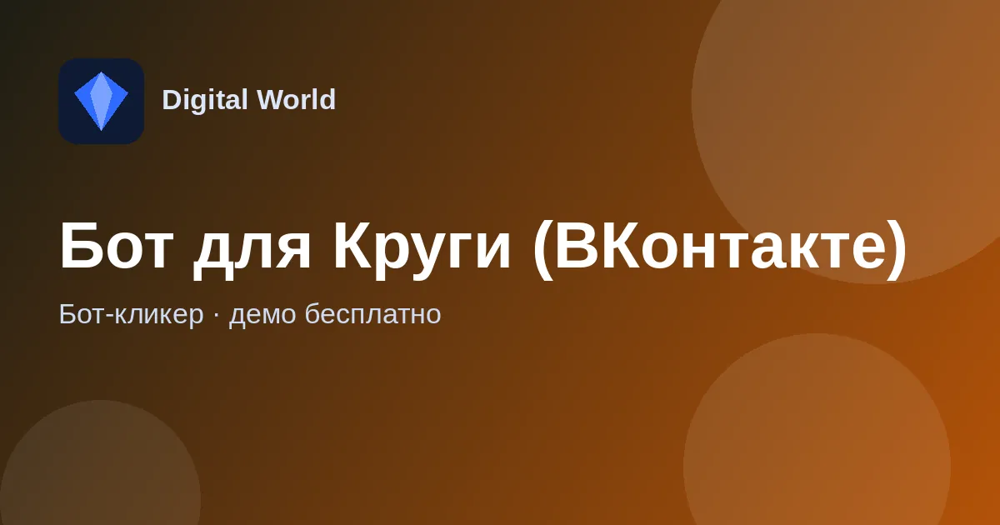

Бот-кликер для игры «Круги» во ВКонтакте
Кликер для браузерной игры «Круги» во ВКонтакте — запускается рядом с Chrome и играет за вас.

Что умеет бот для Круги (ВКонтакте)
Бот сделан для игры «Круги» в каталоге игр ВКонтакте и работает в браузере Google Chrome.
Перед запуском включите в Chrome «Панель закладок» — бот ориентируется по ней.
Сама игра: «Круги» во ВКонтакте.
Как скачать и запустить
- Откройте тему бота во ВКонтакте и скачайте архив по ссылке из первого сообщения.
- Распакуйте архив (пароль 1234) в любую папку.
- Запустите игру и бота, выставьте настройки и нажмите старт.
Требования
- Google Chrome
- Открыта «Панель закладок»
Демо-версия и продление
Попробовать бота можно бесплатно. Чтобы пользоваться дальше, продлите ключ на любое количество дней на Digiseller или напишите разработчику в личные сообщения.
Частые вопросы
Сколько стоит попробовать?
Демо-версия бесплатна. Пароль на архив — 1234.
Бот зависает или не запускается — что делать?
Чаще всего мешают блокировки в интернете. Попробуйте запустить бота через VPN; не каждый VPN помогает — если не вышло, попробуйте другой или другие настройки.
Где задать вопрос?
В теме бота во ВКонтакте — там же новости и обновления — или разработчику в Telegram.